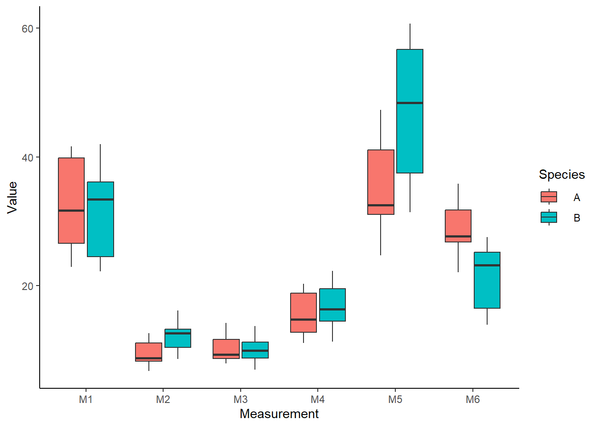
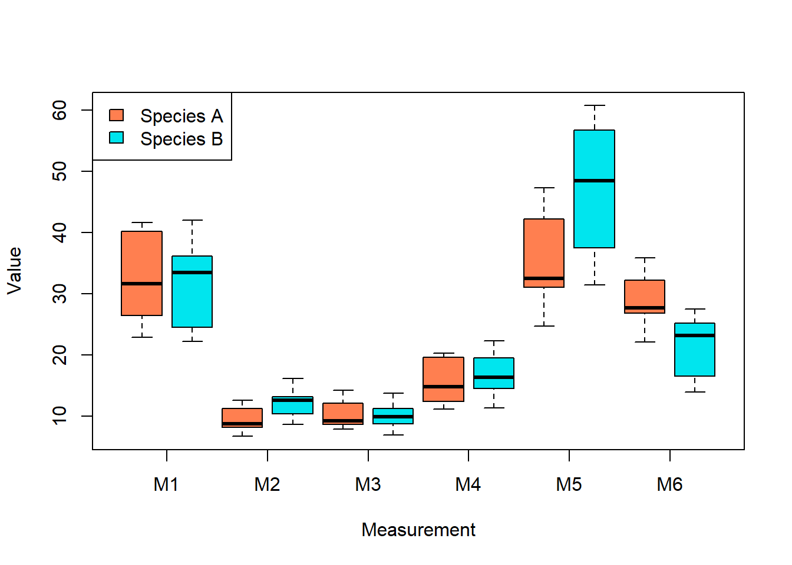
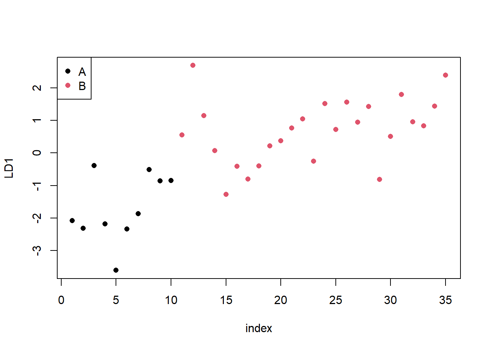
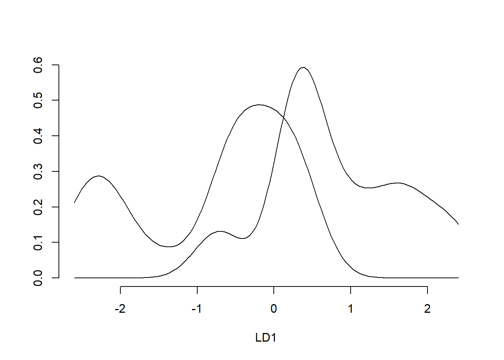
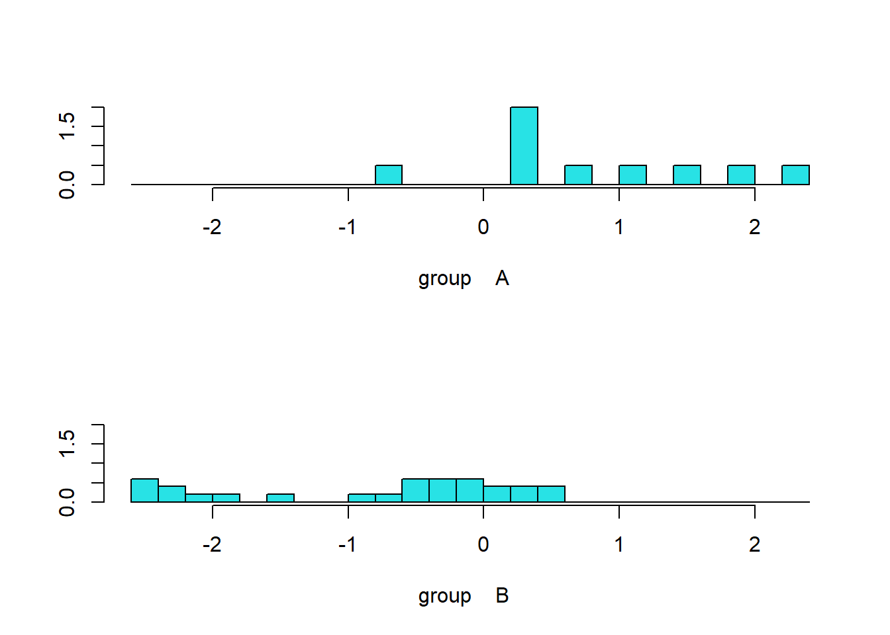
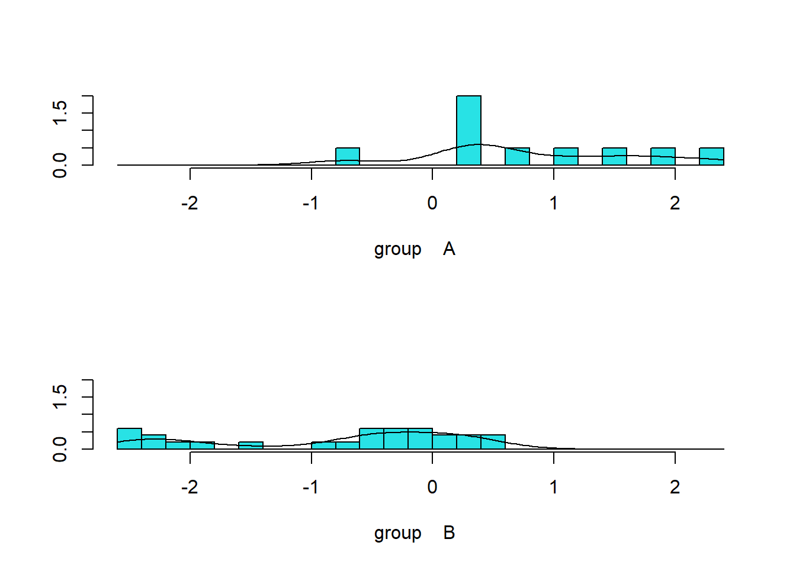
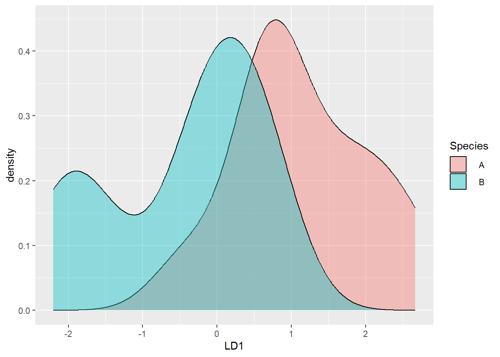

Assignment 1b focuses on Linear Discriminant Analysis (LDA), also known as Canonical Variate Analysis. LDA is used to disclose relationships between groups, create models to differentiate between groups based on data, and discern the contribution of different variables to a model’s ability do discriminate between groups.
For this tutorial, we’ll be using snake.csv.
2.1 Looking at the data
# Load in datasnake =read.csv('snake.csv')# Look at datahead(snake)
Species M1 M2 M3 M4 M5 M6
1 A 41.6 6.7 8.2 12.2 24.7 27.0
2 A 40.2 8.5 9.2 15.5 27.1 30.3
3 A 40.4 12.6 14.2 19.6 46.9 26.8
4 A 26.4 9.0 8.6 14.0 37.6 32.2
5 A 34.4 7.0 12.1 11.1 31.0 35.8
6 A 38.8 8.2 10.2 12.4 42.2 33.6
dim(snake)
[1] 35 7
Our data is a 35 row, 7 column data frame. The first column identifies the species of snake (A or B). The other columns are morphological measurements of each individual snake. We want to know if we can use the morphological measurements of the snakes to determine their species. Let’s keep examining the data:
# Make a boxplotlibrary(tidyverse)
── Attaching core tidyverse packages ──────────────────────── tidyverse 2.0.0 ──
✔ dplyr 1.1.4 ✔ readr 2.1.5
✔ forcats 1.0.0 ✔ stringr 1.5.1
✔ ggplot2 3.4.4 ✔ tibble 3.2.1
✔ lubridate 1.9.3 ✔ tidyr 1.3.0
✔ purrr 1.0.2
── Conflicts ────────────────────────────────────────── tidyverse_conflicts() ──
✖ dplyr::filter() masks stats::filter()
✖ dplyr::lag() masks stats::lag()
ℹ Use the conflicted package (<http://conflicted.r-lib.org/>) to force all conflicts to become errors
# Convert the data to long format so we can use ggplotsnake_long =pivot_longer(snake, # Enter datacolnames(snake)[-1], # Pivot all columns except speciesnames_to ='Measurement', values_to ='Value') # Feed labels to new data frame# Lets take a look at the new data framehead(snake_long)
# A tibble: 6 × 3
Species Measurement Value
<chr> <chr> <dbl>
1 " A " M1 41.6
2 " A " M2 6.7
3 " A " M3 8.2
4 " A " M4 12.2
5 " A " M5 24.7
6 " A " M6 27
# We've converted from wide format to long format,# now all the data values are contained in a single column# which is described by a metadata column# You can also do this with melt from reshape2library(reshape2)
Attaching package: 'reshape2'
The following object is masked from 'package:tidyr':
smiths
head(melt(snake))
Using Species as id variables
Species variable value
1 A M1 41.6
2 A M1 40.2
3 A M1 40.4
4 A M1 26.4
5 A M1 34.4
6 A M1 38.8
# Let's make a boxplotggplot(snake_long, aes(x = Measurement, y = Value, fill = Species)) +geom_boxplot() +theme_classic()

# We can do this in R base plot tooboxplot(Value ~ Species*Measurement, # Plot value by species and measurementdata = snake_long, col =c('coral', 'turquoise2'), # Color by speciesxaxt ='n', xlab ='Measurement') # Remove and label x axislegend('topleft', legend =c('Species A', 'Species B'), fill =c('coral', 'turquoise2')) # Add a legendaxis(1, at =seq(1.5,11.5,2), labels =colnames(snake)[-1]) # Add x axis back in with appropriate labels

Some of our measurements are very similar across species, and others are quite different. Do they differ statistically as a whole?
2.2 MANOVA
The purpose of LDA is to try to discriminate our snakes into species based on their measurements. However, that only makes sense to do if our two species of snake actually differ across the measurements. Our first step then is to discern whether our snake species differ as a multivariate whole. We’ll do this using a MANOVA.
# Run MANOVAsm =manova(cbind(M1,M2,M3,M4,M5,M6) ~ Species, data = snake)summary(sm, test ='Hotelling')
Df Hotelling-Lawley approx F num Df den Df Pr(>F)
Species 1 1.2263 5.7229 6 28 0.000552 ***
Residuals 33
---
Signif. codes: 0 '***' 0.001 '**' 0.01 '*' 0.05 '.' 0.1 ' ' 1
summary(sm, test ='Wilks')
Df Wilks approx F num Df den Df Pr(>F)
Species 1 0.44917 5.7229 6 28 0.000552 ***
Residuals 33
---
Signif. codes: 0 '***' 0.001 '**' 0.01 '*' 0.05 '.' 0.1 ' ' 1
By both the Hotelling’s and Wilks’ tests, our MANOVA is significant, indicating the snake species vary as a multivariate whole.
What about our assumptions though? Our MANOVA assumptions are normality, linearity, and homogeneity of covariances. You’ve been told to assume the latter, so let’s skip that one.
Visually, our residuals actually look quite close to normal. There may be some slight skew, or outliers that are forcing our residuals to statistical non-normality. We might be able to fix this by removing multivariate outliers, or by transforming some of our data (feel free to play around with these ideas!), but based on the shape of our residuals, it is unlikely that our model is fatally biased, and we may end up doing more harm than good. Based on this, we can conclude that our two species have significantly different morphometries given the measurements provided.
2.3 Linear Discriminant Analysis
Now that we’ve confirmed our species differ as a multivariate whole, we can try to use LDA to build a model to predict which species each snake belongs to based on its measurements.
# LDAlibrary(MASS)
Attaching package: 'MASS'
The following object is masked from 'package:dplyr':
select
Call:
lda(Species ~ M1 + M2 + M3 + M4 + M5 + M6, data = snake)
Prior probabilities of groups:
A B
0.2857143 0.7142857
Group means:
M1 M2 M3 M4 M5 M6
A 32.700 9.410 10.16 15.54 35.290 28.950
B 31.496 12.128 10.18 16.78 47.356 21.752
Coefficients of linear discriminants:
LD1
M1 0.01428023
M2 0.29104494
M3 -0.07327616
M4 -0.05544769
M5 0.03629586
M6 -0.17208517
Running our LDA object tells us the prior probabilities used for each species (the proportion of each species in the data), the group means for each measure on each species, and the linear discriminant (LD1) for each measure. We can then plot the LD1 value for each individual:
# Plot discriminant function analysis# Create a data frame to plotldaf_plot =cbind(snake, # Datapredict(ldaf1)$x, # LD1 value for each individual given its measurementsindex =seq(1,nrow(snake), 1)) # Row/Individual number# Plotplot(LD1 ~ index, data = ldaf_plot, col =as.factor(snake$Species), pch =16)legend('topleft', legend =c('A', 'B'), col =c(1, 2), pch =16) # Add legend

Here we can see higher LD1 values are associated with species B, while lower LD1 values are associated with species A. This is just based on model fit however; how do we know we aren’t overfitting? One way to avoid overfitting is by jackknifing (AKA leave-one-out cross validation in this context). This method runs the model once without each point in the dataset, then calculates the posterior probability that the left out point belongs to each species. Let’s try it out:
# LDA 2, CV = Tldaf2 =lda(Species ~ M1+M2+M3+M4+M5+M6, snake, CV = T)# Gather posteriorsas.data.frame(cbind(ldaf2$posterior, # Pull posteriors from ldaf2ResultantSpp=as.character(ldaf2$class))) # Pull predicted species (i.e. species with the higher posterior probability)
A B ResultantSpp
1 0.897801237948675 0.102198762051325 A
2 0.957033498274347 0.0429665017256531 A
3 0.00486396795570833 0.995136032044292 B
4 0.939579607872302 0.0604203921276979 A
5 0.999020574119129 0.000979425880871094 A
6 0.958283942083953 0.041716057916047 A
7 0.859914694048175 0.140085305951825 A
8 0.0790276689479006 0.9209723310521 B
9 0.250711809994116 0.749288190005884 B
10 0.277233534989757 0.722766465010243 B
11 0.0654339037846645 0.934566096215335 B
12 8.13045175684633e-05 0.999918695482432 B
13 0.00857331675606214 0.991426683243938 B
14 0.119793120831736 0.880206879168264 B
15 0.868897347918874 0.131102652081126 A
16 0.291404395123413 0.708595604876587 B
17 0.580893601645515 0.419106398354485 A
18 0.407526292222816 0.592473707777184 B
19 0.097139347240766 0.902860652759234 B
20 0.0629455676122022 0.937054432387798 B
21 0.0262176442553781 0.973782355744622 B
22 0.0110464412594654 0.988953558740534 B
23 0.37967670676917 0.62032329323083 B
24 0.00300786068222619 0.996992139317774 B
25 0.0331152011340242 0.966884798865976 B
26 0.00270158005931187 0.997298419940688 B
27 0.0161164609849135 0.983883539015087 B
28 0.00346528534198866 0.996534714658011 B
29 0.761253716426843 0.238746283573157 A
30 0.0597294571669348 0.940270542833065 B
31 0.00139900114299064 0.998600998857009 B
32 0.0146304515487079 0.985369548451292 B
33 0.0215114427320867 0.978488557267913 B
34 0.00359029891803412 0.996409701081966 B
35 8.92739861715428e-05 0.999910726013828 B
How does this differ from the predictions from our first model?
# Pull ldaf1 model predictionsldaf_pred =predict(ldaf1)$class# Gather Predictionsldaf_diff =data.frame(ldaf1 =as.character(ldaf_pred), ldaf2 =as.character(ldaf2$class))# Add match columnldaf_diff$match = (ldaf_diff$ldaf1 == ldaf_diff$ldaf2)# Which ones are different?ldaf_diff[which(ldaf_diff$match == F),]
ldaf1 ldaf2 match
17 B A FALSE
29 B A FALSE
Individuals 17 and 29 both differed in species prediction between the model fit and the jackknife posterior probability. Now let’s check the accuracy of our model fit:
# Calculate errorldaf_wrong =length(which(ldaf_pred != snake$Species)) # Number of incorrect predictionsldaf_err = ldaf_wrong/nrow(snake) # Divide by number of individuals for error# Print errorldaf_wrong
[1] 5
ldaf_err
[1] 0.1428571
Our model classified 5 out of 35 (~14.3%) of the snakes as the incorrect species, meaning 30/35 were correct (~85.7%). Not bad, but can we do better?
2.4 Model Selection
Our previous model used all 6 measurements, but do we really need all of them, or are some of them unhelpful (or even detrimental)? To test this, we can run model selection using the stepclass() function:
method : lda
final model : Species ~ M6
<environment: 0x000002685672b190>
correctness rate = 0.8571
After model selection, we end up with a model using only M6 to predict species, with a correctness rate of 85.7%. This model has the same correctness as the full model, using only one measurement. In other words, this model is more efficient - it gets to the same accuracy using less information.
This model was generated using forward model selection, meaning the selection process works exclusively by adding variables to the model. We can also do the opposite:
method : lda
final model : Species ~ M1 + M2 + M3 + M4 + M6
<environment: 0x0000026856cb4970>
correctness rate = 0.8571
Backwards model selection works by removing variables from the full model. This means backwards selection should always return a model with a equal or more variables than forwards selection.
method : lda
final model : Species ~ M6
<environment: 0x0000026857512ed0>
correctness rate = 0.8571
2.5 Plotting Probabilities
Lets finish off by making some plots to visualize our LDA model results.
# Pick a model to plotldaf3 =lda(Species ~ M6, data = snake)# Plot density curveplot(ldaf3, dimen =1, type ='dens')

This plots the posterior probabilites of an individual belonging to either species given its LD1 value. Remember from earlier that species A is associated with lower LD1 values.
We can also make this plot as a histogram:
# Plot density curveplot(ldaf3, dimen =1, type ='hist')

Or combine both plots:
# Plot density curveplot(ldaf3, dimen =1, type ='both')

As always, we can also do this with ggplot too:
# Predict speciesldaf3_pred =predict(ldaf3)# Plotpred_species =as.data.frame(ldaf3_pred$x) # Gather LD1 valuespred_species$Species = snake$Species # Gather true species from data# Plotggplot(pred_species, aes(x = LD1, fill = Species))+geom_density(alpha =0.4)# alpha tells you how transparent the plots will be

2.6 Tips for your assignment
Some things you may want to think about for your assignment:
1. How would you pick which model you think is best? What factors would you consider? Are there any factors you would consider other than those discussed in this tutorial?
2. LDA also assumes the data are independent. Do we know this assumption is respected? Why or why not? What would constitute it not being respected?
3. How would you interpret your statistical results biologically (can be in terms of the snakes, how you would study them, or both)? You don’t have to be right, but don’t be vague, and don’t contradict your results.